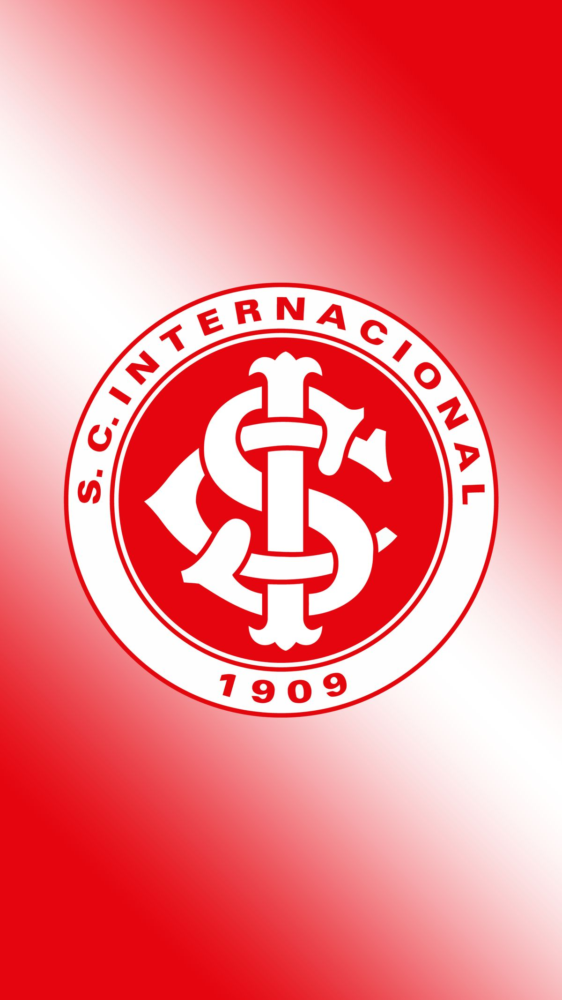

Sport Club Internacional
Fundado em 1909, o Internacional é um dos maiores clubes do Brasil e da América do Sul, com conquistas históricas.
Informações
Localização: Porto Alegre, RS
Estádio: Beira-Rio
Torcida: Cerca de 8 milhões de torcedores
Craques
- Falcão
- D’Alessandro
- Fernandão
Prêmios
- Libertadores (2x)
- Mundial (1x)
- Brasileirão (3x)
- Copa do Brasil (1x)
Valor Aproximado
R$ 1,2 bilhão